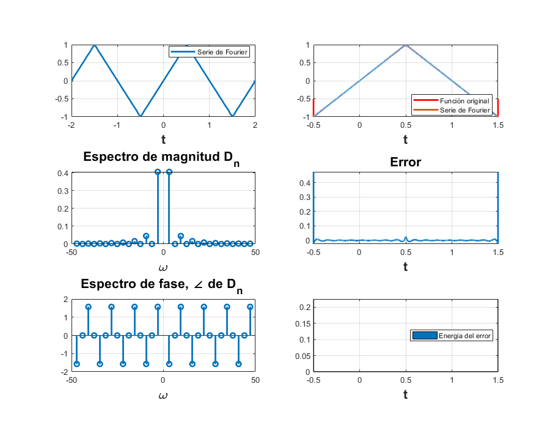
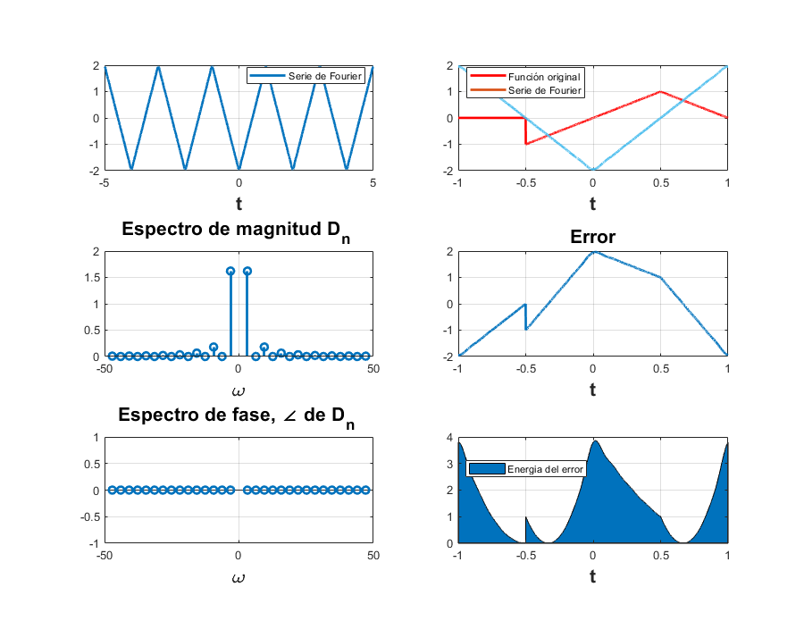

Práctica 5: Series de Fourier en tiempo continuo.
Contents
Integrantes:
Juan Pablo Jimenez Leaños
Samuel Sánchez Duque.
Objetivo de la practica.
- Realizar gráficas de series de Fourier exponenciales y trigonométricas en tiempo continuo.
- Manipulación de instrucciones en MATLAB.
Ejemplo 6.2 del Lathi.
Find the compact trigonometric Fourier series for the triangular periodic signal x(t) shown in Fig. 6.4a, and sketch the amplitude and phase spectra for x(t)
clear; u = @ (t) heaviside(t); f = @ (t) (2.*t.*(u(t+.5)-u(t-0.5)))-((2-(2.*t)).*(-u(t-0.5)+u(t-1.5))); d0=0; dn=@(n) (2*j*(2*sin((n*pi)/2) - n*pi*cos((n*pi)/2))*(cos((n*pi)/2)^2 - 1))/(n^2*pi^2); t0=-0.5; tf=1.5; armo=15; a=-2; b=2; sfc(t0,tf,dn,d0,f,armo,a,b);
Ejemplo 6.4 del Lathi.
Find the compact trigonometric Fourier series for the square-pulse periodic signal shown in Fig. 6.6a and sketch its Fourier spectrum.
g = @ (t) u(t+pi/2)-u(t-pi/2); d0=.5; dn=@(n) (sin((n*pi)/2)/(pi*n)); t0=-pi/2; tf=(3*pi)/2; armo=15; a=-2; b=4; sfc3(t0,tf,dn,d0,g,armo,a,b);